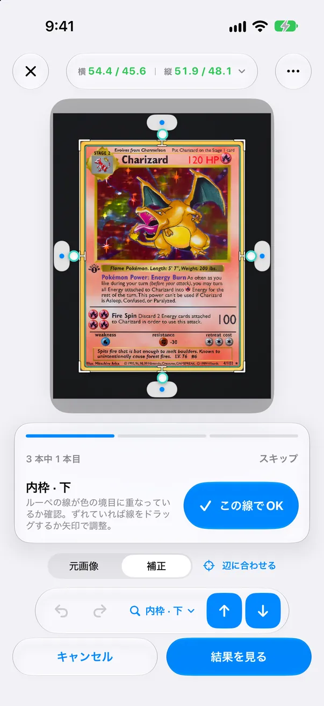
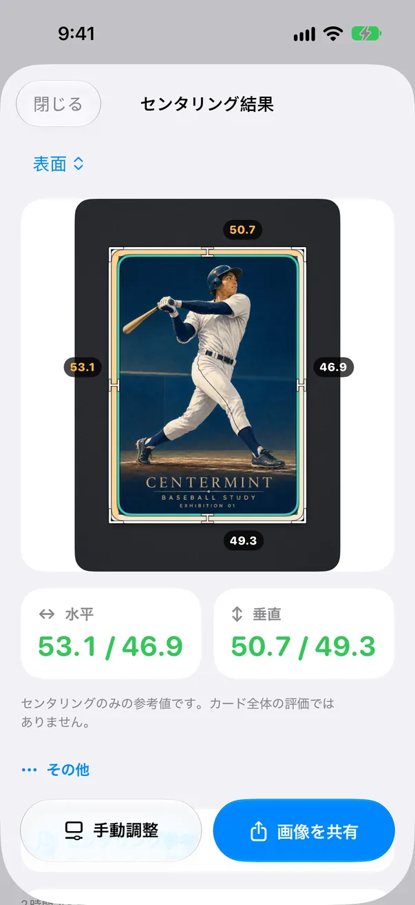
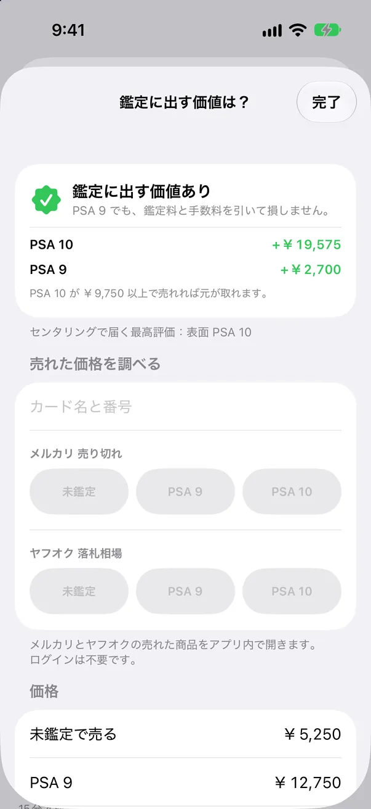
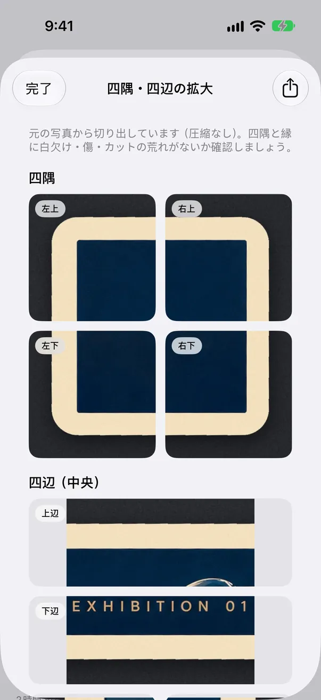
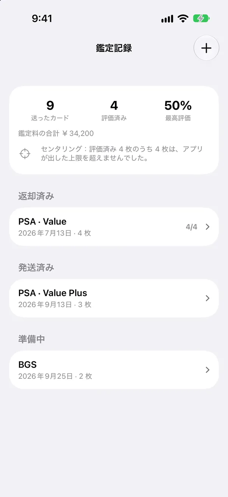
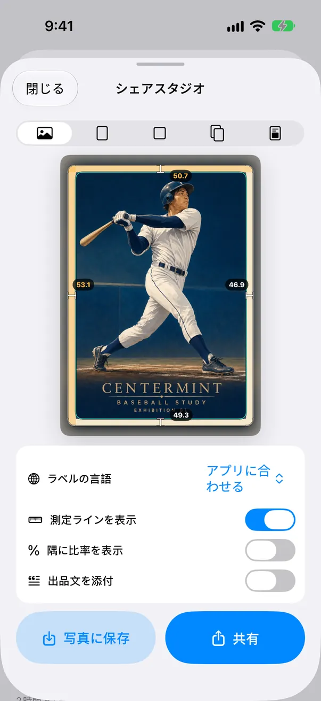

一本ずつ線を確認 無料
確認が必要な線があると、自信の低い線から順に一本ずつ案内します。拡大鏡が自動でその線に合うので、「この線でOK」で次へ。ずれていればドラッグで直せます。
確認が必要な理由 無料
反射、ぶれ、暗さ、解像度不足、マットとカードの縁の色が近い、印刷枠が見つからない など、理由をひとことで表示。撮り直せば解決するときはそう伝えます。

余白を測り、自信のない線を一本ずつ確認。そのうえで、鑑定費用を払う価値があるかを判断できます。

CenterMint は、トレーディングカードやスポーツカードのコレクター向け iPhone アプリです。素体（スリーブなし）のカードの写真から左右・上下のセンタリングを測り、PSA・BGS・CGC が公開しているセンタリング基準と比較して、鑑定に出す前の判断を助けます。独立したツールで、測るのはセンタリングだけです。総合的な鑑定点数は予測しません。
確認すべき場所がわかる測定
手順 1 / 5
カードをスリーブから出し、縁と色の違う無地のマットに平らに置きます。均一な光で撮影するか、写真やスキャン画像を読み込みます。
自動測定は素体のカードだけ。 スリーブ・ローダー・鑑定ケースに入ったカードは、四辺を自分で合わせて測ります。スリーブを検出すると知らせて、手動合わせに切り替えます。
手順 2 / 5
CenterMint がカードの外縁と印刷された内枠を提案します。自信のない線があれば、拡大鏡で一本ずつ案内し、その理由も表示します。
素体のカードは自動で測定。金枠・銀枠は一辺ずつサブピクセル単位で合わせ、布や柄のあるマットの上でも外枠を取り違えにくくなりました。
手順 3 / 5
各線を確認し、必要なら少し動かします。左右・上下の比率はその場で更新されます。
拡大鏡 2.0：実際のピクセルとピクセルグリッド、境界の明暗プロファイルを表示し、向かい合う辺を連動して比べられます。
無料版でも、測定には常にフル解像度の写真を使います。
手順 4 / 5
裏面も測り、表裏それぞれを PSA・BGS・CGC の基準と比べます。

手順 5 / 5
提出前に四隅・四辺の拡大を見て、最近の成約価格で「鑑定に出す価値は？」を計算します。
1.9 では、お金がかかる判断「このカードは鑑定に出す価値があるか」を助ける機能を追加しました。
バージョン 1.9 の新機能
確認が必要な線があると、自信の低い線から順に一本ずつ案内します。拡大鏡が自動でその線に合うので、「この線でOK」で次へ。ずれていればドラッグで直せます。
反射、ぶれ、暗さ、解像度不足、マットとカードの縁の色が近い、印刷枠が見つからない など、理由をひとことで表示。撮り直せば解決するときはそう伝えます。

素体・PSA 9・PSA 10 の成約価格（BGS・CGC も対応）と鑑定費用、販売手数料を入れると、素体で売る場合と比べていくら得か損か、PSA 10 がいくら以上で売れれば元が取れるかを表示します。センタリングで届かない評価は自動で除外。価格は自分で入力します。日本では、メルカリの売り切れ・ヤフオクの落札相場をワンタップで開けます。

元の写真から四隅と四辺の中央を元の解像度で切り出し、白欠けや打痕を拡大して確認できます。1枚の画像にまとめて共有も可能。表示するだけで、角や表面を採点するものではありません。


リザードンの写真から元の解像度で切り出した四隅と四辺。白欠けの判断はあなたの目で。アプリは採点しません。

いつ何枚出したか、費用、戻ってきた評価を記録。最高評価の割合、鑑定費用の合計、実際の評価がアプリのセンタリング上限と合っていたかを確認できます。

共有画像はカード写真が主役。ロゴは右下に小さく入るだけです。

バッチ 2.0（Pro）：続けて撮影してキューに追加、確認が必要なカードだけ表示、センタリング順に並べ替えて一括保存。決策アシスタントで「送る・先に補う・目標未満」に仕分け、提出リストを PDF で書き出せます。
提出リスト PDF
カードをスキャンし、拡大鏡で線を一本ずつ確認し、鑑定費用に見合うかを計算し、四隅を見て、提出を記録します。
アプリの画面を簡略化して、ブラウザ上でその場で描いています。数値はアプリがこのリザードンを測った結果、価格は例です。

Pro は月額・年額のサブスクリプションと買い切りがあります。プランと現地価格はアプリ内に表示されます。サブスクリプションは解約するまで自動更新され、Apple アカウントの設定で管理できます。
測定は iPhone の中で行われ、アカウント登録は不要です。写真が端末の外に出るのは、自分で許可したときだけです。修正データの共有は初期状態でオフ、バッチ読み込み時は最初に一度だけ確認が表示され、断ることもできます。入力した価格と鑑定記録は端末内に保存されます。詳しくはプライバシーポリシーをご覧ください。 プライバシー（英語）
アプリは日本語、英語、韓国語、ベトナム語、簡体字中国語、繁体字中国語に対応しています。
自動測定は素体のカードだけが対象です。スリーブやローダー、ケースには独自の縁や反射があり、カードではなくプラスチックを測ってしまうためです。スリーブを検出すると知らせて手動合わせに切り替わるので、四辺を自分で合わせてください。いちばん正確なのは、取り出して撮り直すことです。
写真の質と、確認した線の位置で決まります。差はわずかで、左右の余白が各 3 mm のカードなら、50/50 と 55/45 の違いは 0.3 mm しかありません。CenterMint は金枠・銀枠を一辺ずつサブピクセル単位で合わせ、自信のない線を知らせますが、ひとつの精度の数字は掲げていません。知らされた線は拡大鏡で確認し、ぶれや反射のある写真は撮り直してください。
PSA が公開している Gem Mint 10 の目安は、表面が約 55/45 以内、裏面が 75/25 以内です。PSA 9 は表面約 60/40、裏面 90/10 です。BGS と CGC はそれぞれ独自の基準を公開しており、カードの種類によって適用される数値もあります。センタリングは評価項目のひとつにすぎず、良くても点数は保証されません。提出前に公式ページを確認してください。
評価ごとに「上乗せ額 =（鑑定後の価格 − 素体の価格）×（1 − 販売手数料）− 鑑定費用」を計算します。販売手数料は素体で売っても鑑定品で売ってもかかるので、差額にだけ掛けます。元が取れる最高評価の価格は「素体の価格 + 鑑定費用 ÷（1 − 販売手数料）」です。PSA 9 のような一つ下の評価でも得なら「出す価値あり」、最高評価でだけ得なら「角と表面しだい」、どの評価でも得にならない、またはセンタリングで得する評価に届かなければ「おすすめしません」と表示します。PSA 10 になる確率は推定しません。
いいえ。eBay や価格サービスとは連携しておらず、価格を推測することもありません。最近の成約価格は自分で入力し、カードごとに端末内に保存されます。日本では、カード名と番号でメルカリの売り切れ・ヤフオクの落札相場を開くボタンがあります。
判定はしません。「四隅・四辺の拡大」は、元の写真から四隅と四辺を元の解像度で切り出して、自分の目で確認できるようにする機能です。スマートフォンの写真では細かい傷を見落とすこともあるので、気になる箇所はルーペと明るい光で確かめてください。
無料：フル解像度でのセンタリング測定、拡大鏡、一本ずつの線確認、PSA・BGS・CGC 基準との比較、最大 5 枚のバッチ 1 回、好きなカード 1 枚での鑑定前チェック（鑑定に出す価値は？・四隅・四辺の拡大）。Pro：すべてのカードで鑑定前チェック、鑑定記録、バッチ測定、提出リスト PDF つきの決策アシスタント、CSV・4K 書き出し、プリセット、広告なし。
いいえ。CenterMint は独立したアプリです。センタリング基準は各社の公開基準を比較用に載せているだけで、実際の鑑定結果とは異なる場合があります。
測定は iPhone の中で行われ、アカウントは不要です。写真がアップロードされるのは、修正データの共有をオンにしたとき（初期状態はオフ）か、バッチ読み込み時の一度だけの確認に同意したときだけで、断ることもできます。価格と鑑定記録は端末内に保存されます。